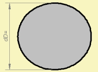
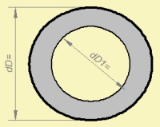

| Identifier | dD= | |
| Units | m | |
| Format | Floating point number | |
| Purpose | Diameter of diaphragm or cross-section. | |
| Used in | Def_Driver, Def_TwoCoilsDriver, Def_PiezoDriver, Coupler, Diaphragm, Duct, Enclosure (vented) | |
| See also | WD= HD=, SD=, dD1=, SD1= | |
| Lumped Element Diaphragms | ||
 |
 |
dD= is the diameter of a circular membrane or duct cross-section.
Note, that membranes typically are supported and have a gradient of motion towards the suspension, which may yield the effective area of the membrane to be smaller than it appears geometrically.